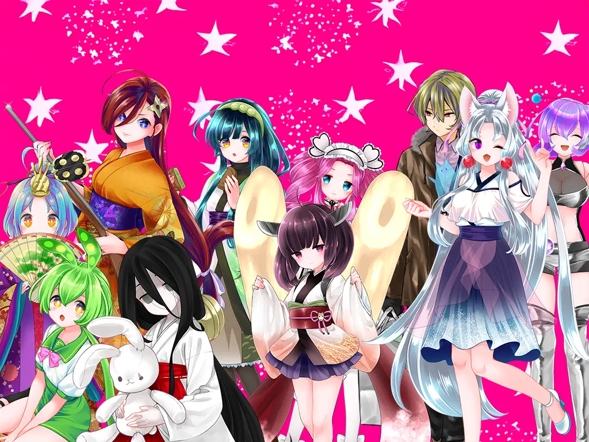

「推し活」の2つのスタイル
よくある「推し活」 (受動的)
公式からの供給（グッズ、ライブ）を待ち、それを消費することが中心。また、二次創作も公式の制約の中で行われがちです。つまり、あくまで「消費者」としての喜びが主となります。
ソフトウェアトーク (創造的)
明確な「公式」が希薄なため、解釈は無限大。絵が描けなくても、立ち絵素材や声を組み合わせ、自分の手で推しに「命を吹き込む」事ができます。これは「創作者」として楽しめます。
「ソフトウェアトーク」とは？
キャラのある音声合成ソフトのコンテンツ全般の呼称です。
創造性が特徴で、原作のようなものはほぼ存在せず、
自由に自分の解釈で創り、共有する事が出来ます。
推しを追うというのが従来の主な推し活とは違います。

（画像をタップで詳しく）
柔軟性の高い推し活
ソフトウェアトークがいかに自由か。私の推し動画をまとめました。
アニメ
手書きアニメーション作品。個人製作ながら、高いクオリティの動画となっています。
ストップモーション
「金平糖」という無機物に「声」を当て、キャラクターとして命を吹き込んだ作品。
動画以外の展開
キャラクター「概念」グッズ制作など、自分の「好き」をあらゆる形で追求できます。